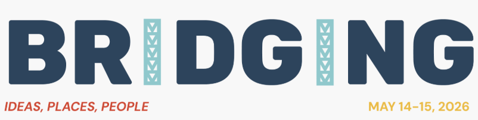
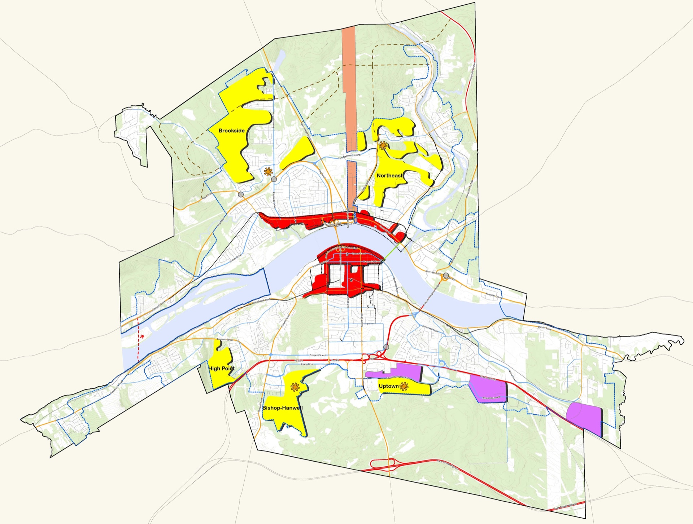
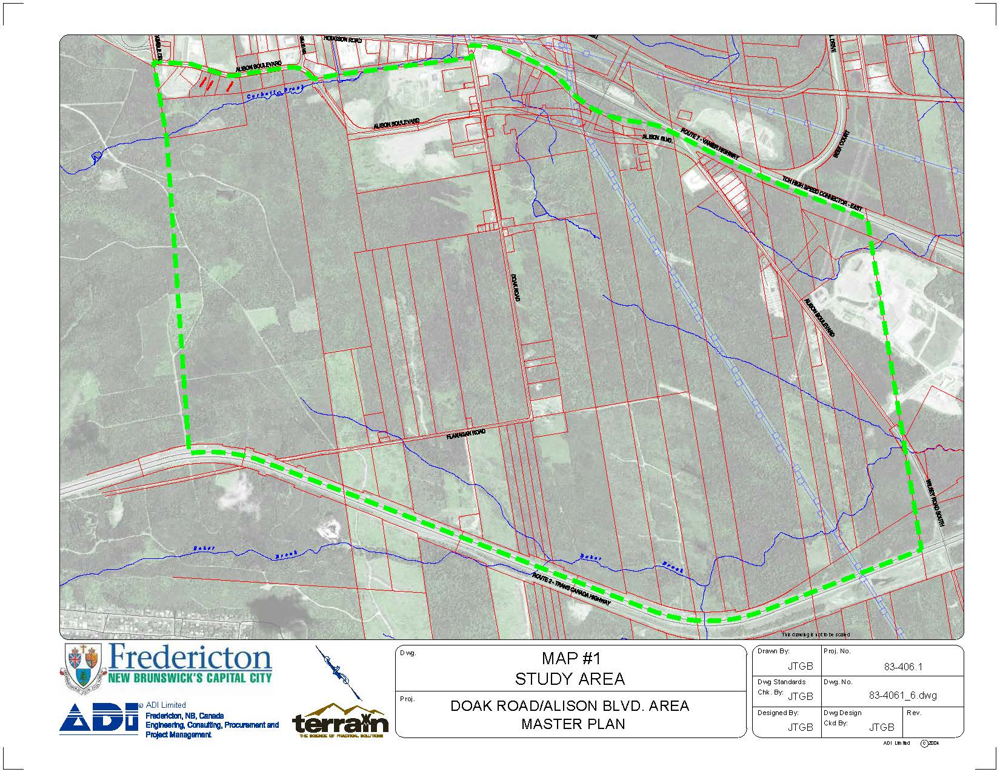
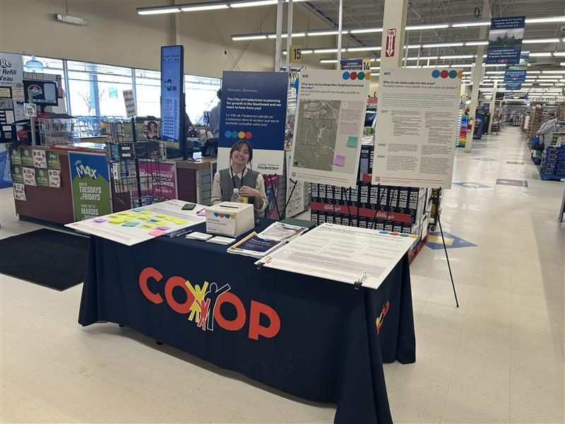
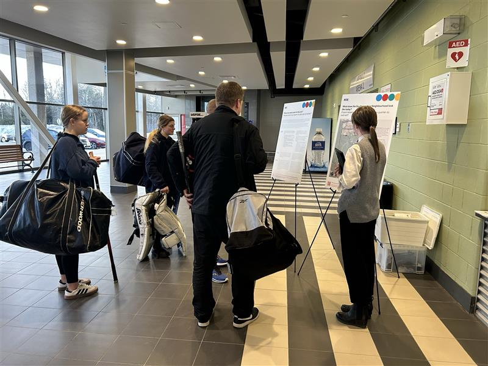
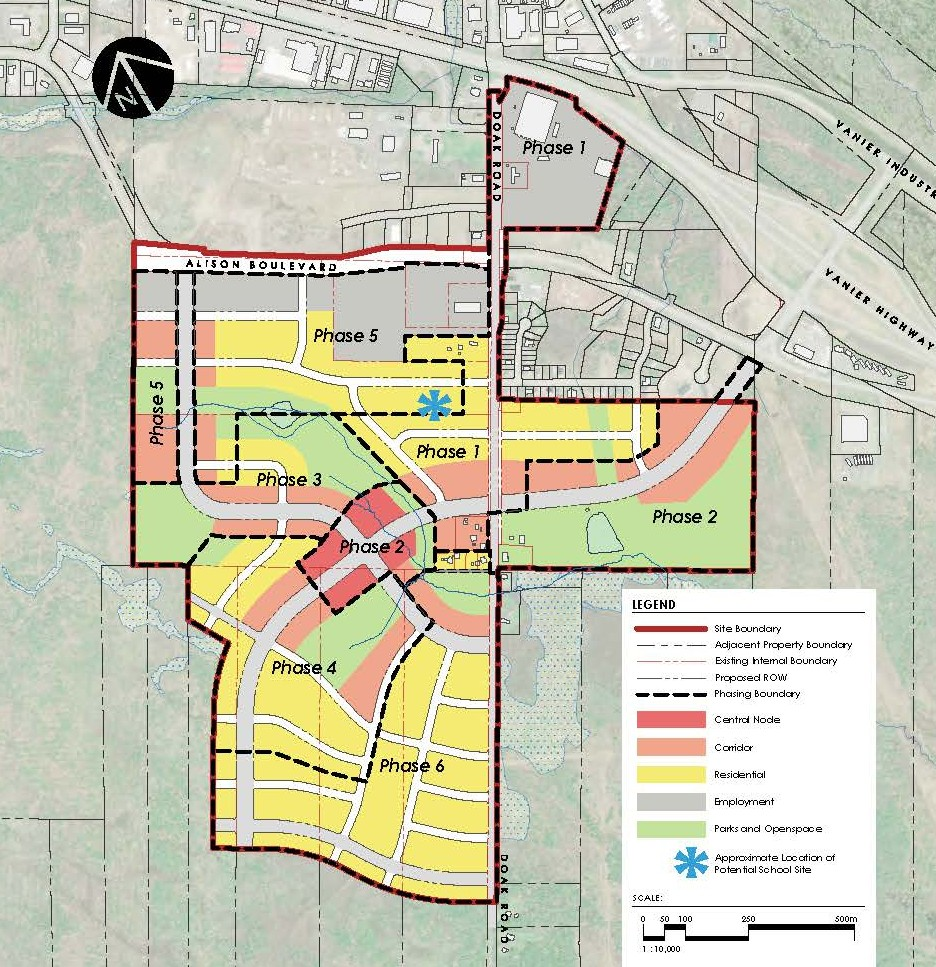

01 / 16
/
LPPANS 2026
/
Halifax · May 15, 2026
Sequencing
Growth .
Implementing the initial phases of a secondary plan in Fredericton Southeast.
Connor Wallace — Principal, zzap Architecture + PlanningWith Sarah Young , EXP Services

Open with confidence. Pause after the title. Establish that this isn't a vision talk — it's an
implementation talk. About 30 seconds.
Sample line: "Good morning. I'm Connor Wallace, a principal at zzap. That's the site behind me —
Doak Road, on the southeast edge of Fredericton. About 200 hectares of forest and a handful of
houses today. The plan we've been working on with the City of Fredericton turns it into a
neighbourhood for five-to-seven thousand people. Over the next twelve minutes I'm going to walk you
through how — and then put you to work on the first two phases of it."
02 / 16
/
The premise
Planning a growth area is one thing.Implementing it is another.
~45 seconds. Plant the diagnostic. Everyone in this room has watched it happen — adoption,
press release, a few articles, and then quiet. Let them sit with that for a beat. Then pivot:
this one is different. The reason is what the City decided to do about disposition.
Sample line: "Planning a growth area is one thing. Implementing it is another. Council can
adopt a beautiful secondary plan and then watch it sit — the vision goes on a shelf, council
moves on, and ten years later a comprehensive review finds the strategy never actually got
built. The reason this one is moving — the reason we're here today — is what the City decided
to do about land disposition. We'll get there. First, a quick orientation on where this
instrument sits."
Pause before clicking forward.
03 / 16
/
Context
/
Plan hierarchy
Three instruments. One framework.
Step 01
City-wide
Municipal Plan
This project
Step 02
District
Secondary Plan
Step 03
Parcel
Zoning Bylaw
~50 seconds. Orient the room before the project specifics. The swoop at the bottom is the
alternative path — what happens when you skip the secondary plan.
Sample line: "Before the site — a quick orientation on instruments. A secondary plan isn't a
standalone document. It's the middle layer in a three-part framework. The municipal plan sets
city-wide direction — where growth goes, where the transit and housing priorities sit. The
zoning bylaw is the regulatory end — what you can actually build, lot by lot. The secondary
plan is the bridge between them. It takes municipal direction and makes it site-specific — land
use, phasing, urban design, servicing — and then it gets translated into zoning. Without a
secondary plan, a city amends the bylaw directly from the municipal plan — that's the swoop
at the bottom — and you lose the deliberate, site-specific coordination. Everything I'm
going to walk through lives in that middle layer."
04 / 16
/
Context
/
Southeast New Neighbourhood
Fredericton's fourth growth node.
~200
ha
Plan area
65%
City-owned overall
100%
City-owned in Phases 1 & 2
5–7K
K
Future residents by ~2046
Today's workshop — Phases 1 & 2, entirely on City land.

Fig. 01
Fredericton growth nodes. Southeast (lower right) replaces the Uptown node that didn't materialize.
~90 seconds. Establish geography, stakes, and the ownership lever.
Sample line: "The Southeast New Neighbourhood sits south of the Vanier Highway, around Doak
Road. About 200 hectares — large but not huge. The thing that makes it interesting is the
ownership: the City owns roughly 65 percent of the plan area overall — and 100 percent of
Phases 1 and 2, which is what we'll be looking at today. That changes everything about how the
plan works. The other thing worth knowing — Fredericton already tried to develop a growth
node here a decade ago, the Uptown New Neighbourhood, and it didn't go. Part of our job was
figuring out why, and not repeating it. This Southeast node is the replacement."
Don't read all four numbers — just point and let them register. Point at Uptown on the map.
05 / 16
/
Context
/
The team
Three offices, one plan.
Client & lead
City of Fredericton
Architecture + Planning
zzap Consulting Inc.
Plus the people who live here — residents and stakeholder groups.
~60 seconds. Three consultants, one client, and the community. Don't read the cards — speak
to the partnership and slip the zzap framing in verbally.
Sample line: "Three offices. The City initiated this — it's their response to growth demand
and the fact that Uptown didn't take off. They held the pen on policy, scope, and Council
approvals; they set the constraints, and they approved scope changes as the project evolved.
zzap did the architecture and planning. We're a small firm out of Dartmouth — Southeast
Fredericton is one of our larger municipal commissions. EXP handled engineering. They're
local, decades of Fredericton infrastructure, and they led the initial feasibility study that
told us whether services could even reach the site. The reason that mattered: every
implementation question we'll talk about in a minute lives at the seam between planning and
engineering. If those two conversations happen sequentially you get a plan that doesn't
pencil. We did them in parallel. And alongside all three of us — the community. Two rounds of
engagement, a couple hundred touch points, and a real influence on where this plan ended up."
06 / 16
/
Context
/
Original plan area, condensed
Original plan area, condensed.

Fig. 02a
Original plan area — condensed during early planning
City of Fredericton · zzap Architecture + Planning
~30 seconds. Quick contextual beat between team and engagement. The plan boundary you'll see
in the rest of the deck is not the original — early in the process we tightened it. Show the
map, name the move, and click forward.
Sample line: "One quick note before we get to engagement. The plan boundary you've been
looking at isn't where this started. The original study area was substantially larger. Early
in the work we condensed it — focusing the secondary plan on the parcels where the City had
the leverage and the servicing case actually closed. The circle here marks the part we kept.
The rest gets handled through normal long-range planning, on its own timeline."
07 / 16
/
Context
/
Engagement
Two rounds. Different conversations.

Pop-up at the Co-op

Open house, Grant Harvey Centre
Round 1 — Mar–Apr 2025
Be proactive, innovative, bold. Phase 1 sets the tone.
Community input
Round 2 — Aug–Oct 2025
City-owned lands are a unique opportunity to deliver outcomes the market won't.
Affordable Housing Committee
Feasibility study
Oct–Dec 2024 · EXP servicing test
Round 1
Mar–Apr 2025 · Co-op & Harvey Centre
Drafting
May–Jul 2025
Round 2
Aug–Oct 2025 · Engage Fredericton
Final draft
Jan 2026
Adoption
Mar 2026
~60 seconds. Don't read both columns — narrate the arc.
Sample line: "Before either round of engagement we ran a feasibility study with EXP — late 2024,
before we drew any land-use lines — to confirm whether services could reach the site at all.
That set the ceiling for everything that followed. Then engagement happened in two rounds, and
they had a totally different character. Round one — wide open. Pop-ups at the Co-op and at hockey
games. About seventy people through the open houses. Big themes were big themes: affordability,
transit, environmental protection, and a really strong push to be bold in phase one because the
first thing built sets the trend. Round two was quieter and sharper — staff and the Affordable
Housing Committee, mostly. The conversation moved from 'what should this be' to 'where exactly
does the affordability lever live, and how does the Central Node activate?' Plan was adopted
March 2026."
08 / 16
/
Part Two
/
What this plan had to solve
Three
challenges
shaped this
planning
process.
Challenge 01
Servicing.
Challenge 02
Public land.
Challenge 03
Community in isolation.
~20 seconds. Quick beat to set up the three challenges before walking through them one at a
time. Don't read the cards — just gesture at the structure.
Sample line: "Three challenges shaped this planning process. They're the three you'll be working
with at your tables — so pay attention to how we framed them, because in fifteen minutes you'll
be framing your own version. Let's walk them."
09 / 16
/
Challenge 01 of 03
/
Servicing
01
Servicing at the periphery.
The trap
Spend big upfront.
Our move
Phase the pipes with the plan.
~90 seconds. The engineering challenge — keep it concrete. Set up the three-challenges frame
here so it carries through the next two slides and into the workshop.
Sample line: "Three challenges. They're the three this project asked us to figure out, and
they're the same three I want you wrestling with when you get to your tables — because they
don't disappear once a plan is adopted. First: servicing. The plan area sits at the edge of the
existing service boundary, which means extending services to support development. A new booster
station, a new storage tank, lift station upgrades on Wilsey Road, culverts. Big capital. The
trap is obvious — overbuild upfront, hope demand catches up, and you end up with stranded
municipal assets. What EXP did instead was an initial feasibility study right at the front of
the project to figure out what services could actually reach the site, and at what cost. That
study set the ceiling. Then the land-use framework and the densities were sized inside that
ceiling, with the phasing matched to the servicing increments. Slower, but the dollars match
the demand."
Pause on the "+". It's the through-line.
10 / 16
/
Challenge 02 of 03
/
Public land
02
Public land as a policy lever.
The trap
Sell the land, write the plan.
Our move
Tie release to phase triggers.
~70 seconds. This is the political/policy challenge. Image lives on the next slide — speak to
the lever here, then click forward and let the map sit.
Sample line: "Second challenge — public land. Sixty-five percent across the plan area. And —
this is the part to hold onto — one hundred percent of the first two phases. The phases you
are about to work on at your tables are entirely on City land. That is a lot of leverage at
exactly the moment that the tone for the whole node is set. But it only works if you treat
it as a planning instrument, not a revenue source. The trap is to write a beautiful secondary
plan, then sell parcels for top dollar to whoever shows up, and watch the affordability
targets evaporate at land disposal. The strategy was to use the secondary plan to direct
disposition: phase triggers tied to land release, conditions on housing mix and form embedded
in the sale terms. The plan and the parcels move together. Let me show you what that looks
like on the ground."
11 / 16
/
Challenge 03 of 03
/
Isolation
03
A complete community in isolation.
The trap
Build car-only. It sticks.
Our move
Mixed use, anchored to the Co-op.
~90 seconds. The urbanism challenge. The long-term reframe: building a car-only edge community
calcifies into permanent car-dependency — the geography itself reinforces it, and retrofitting
to mixed use is nearly impossible once established. The move is mixed use from day one,
anchored to the Co-op so the very first phase has a walkable destination.
Sample line: "Third challenge — the urbanism one. The site is isolated. There's the Co-op on
the periphery within walking distance, but otherwise no neighbouring village to lean on. The
trap here is the long-term one: if you open Phase 1 as a car-only suburb at the edge of a
city, the geography itself reinforces that pattern. Every daily errand becomes a drive, and
retrofitting that into a multimodal, mixed-use community ten years later is almost impossible.
Our move was to enable mixed use and higher density from day one — anchored to the Co-op,
with frontage on Alison Boulevard and Doak Road — and let the Central Node fill in inside
Phase 2 once there's population to support it. Commercial activates incrementally along the
corridors. The community gets a walkable, mixed-use spine from the start."
This sets up the workshop directly. Land it.
12 / 16
/
The plan
/
Phasing
Six phases. Three logics.
1 · 2 Corridor first, into the node 3 · 4 Infill behind demand 5 · 6 Build out around the node
→ You're about to work on Phases 1 and 2.

Fig. 05
Land use plan with phasing overlay
Southeast Secondary Plan, Jan 2026
~60 seconds. Show, don't read. Let the map speak.
Sample line: "Here's where the plan landed. Six phases, grouped into three logics. The
arrangement isn't accidental — it tracks the three challenges I just walked through. Phases
one and two together thread the corridor where access and servicing already exist, and they
lead into the Central Node — which itself sits inside Phase 2 — so the neighbourhood has a
working main street from the start. Phases three and four infill behind that — they're the
phases that come on the back of demonstrated demand and the major servicing investment that
goes with them, and they extend connections back up to Alison Boulevard for future phases on
private lands. Phases five and six continue the infill around the Central Node. One thing
worth flagging — the hatched area in the southeast is reserved as a potential provincial
public-school site. If the Province moves on it, a school here would integrate the community
amenities this neighbourhood needs anyway — playing fields, gym, basketball courts — into a
single capital investment. That's a partnership lever the plan is deliberately leaving room
for. In about three minutes, you're going to be looking at this map at your tables, focused
on phases one and two."
DELIVERY HINT: Bridges directly into the workshop intro. Keep the energy up.
13 / 16
/
Workshop
/
Your turn
Build
out
Phases
1
and
2.
5 min Orient Discuss + draw on the trace paper Two tables share back
Sarah and I are floating. Wave us over.
~45 seconds. Crisp instructions. Less text on the slide this time — frame the exercise verbally.
Sample line: "Alright — your turn. The plan is approved. What we're asking you to do is
implement it on Phases 1 and 2 — given the goals of the plan and the three challenges I just
walked through, what are some strategies, what are some moves, that actually deliver this on
the ground? On your table you've got a large map of Phases 1 and 2 with trace paper to draw
on, plus a catalog of the supporting plan schedules — land use, transportation, open space,
the demonstration plan. There's a QR code on the screen if you want any of that digitally,
including the secondary plan itself. Five minutes to orient, then dive in — discuss, sketch,
and share back. Sarah and I are floating — wave us over."
KEEP TIME. Resist letting Q&A eat the workshop.
14 / 16
/
The plan
/
Zones applied in Phases 1 & 2
Three zones. Three jobs.
MR-5
Multi-Residential
Carries the volume — apartments along the corridor edge, with limited ground-floor commercial.
Height max 24 m
·
Density 160 u/ha
·
Affordable bonus to 333 u/ha
MX-3
Mixed Use
Carries the programme — commercial below, residential above. The Central Node zone.
Height 9 m min — 24 m max
·
Residential 25 % GFA min
R-5
Residential
Carries the mix — low-rise housing with single-detached capped at 80 % of units.
Forms single, semi, duplex, townhouse, cluster
·
+ up to 3 SDUs / lot
~30 seconds. Land briefly between workshop-intro and closing — these three zones carry
Phases 1 and 2 and tables will reference them as they sketch. Don't read parameters; the
handout has the full schedule.
Sample line: "Three zones do most of the lifting in Phases 1 and 2. MR-5 — apartments along
the corridor. MX-3 — mixed use, the Central Node zone. R-5 — low-rise residential, single-
detached capped at eighty percent so the block-level mix is forced, not just the plan
average. The full schedule sheet is on your tables, QR on screen for the digital copy. To
your tables."
15 / 16
/
Closing
/
More on the project
Thank
you.
~30 seconds. Brief — workshop is the headline now.
Sample line: "Project documents — including everything I just walked through — are on the
City's engagement page. zzap is at zzap.ca. I'm at connor@zzap.ca if anything comes up that
you want to talk about after. Thanks. Now — to your tables. The prompts are coming up on the
screen behind me; leave them there while you work."
16 / 16
/
Workshop
/
At your tables
The City is the primary landowner. How does this change our approach?
01
Disposition model.
Outright sale, long-term lease, joint venture, RFP-with-conditions, land trust — what
disposition mechanism best delivers the plan's intent on publicly-owned land?
02
The right partner.
What does the first development partner look like for Phase 1? What track record,
capabilities, or commitments would you weight over price at RFP?
03
Conditions in the sale.
Zoning sets envelope. What does the disposal agreement need to carry on top — mix,
affordability, form, timing — so that approved zoning plus private intent actually delivers
the plan?
04
Release sequence.
Which parcels go first, second, third? What servicing milestone, absorption signal, or
partnership state has to be true to unlock each release?
05
The handoff.
Streets, parks, ground-floor commercial, affordable units — where does the City's role
stop and the partner's start? Who builds, who owns, who maintains?
NOT a slide you speak to. Click into it as you wrap, then walk to the tables. The slide stays
on screen for the duration of the workshop so anyone who looks up sees the prompts.
If anyone asks "do we answer all five?" — no. They're scaffolding, not a checklist. The
through-line is the same: City owns the land, intends to partner, what's the move.